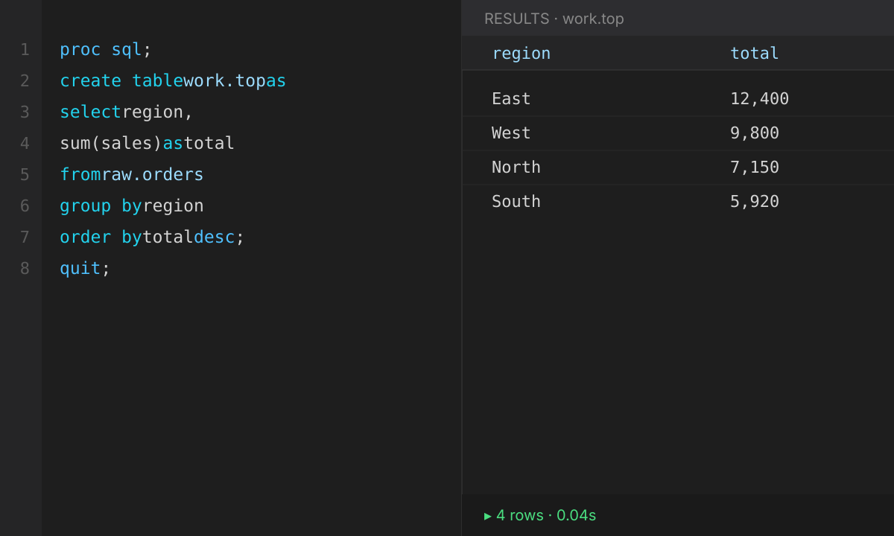
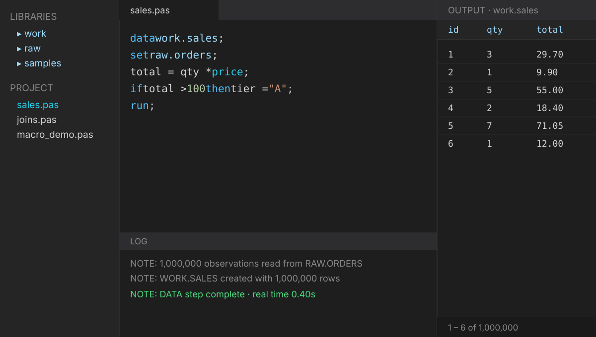

DATA step & PROC SQL
A familiar DATA step and PROC SQL model for transforming and querying your data.
Meet PAS
Run DATA step and PROC SQL programs right on your desktop — backed by DuckDB & Apache Arrow. No server, no subscription, no cloud.

Why PAS
A familiar DATA step and PROC SQL model for transforming and querying your data.
SQL executes on a highly optimized engine with zero-copy Arrow transfer.
Paginated virtual scrolling handles huge tables smoothly.
A single redistributable binary. No server, no subscription, no cloud.
%macro, %if/%do, macro functions and &/% substitution.
Windows, macOS and Linux from one codebase.
How it works

Editor with syntax highlighting, a real-time log pane, a paginated output viewer, and library/project browsers — all streaming rows through the DATA step without holding everything in memory.